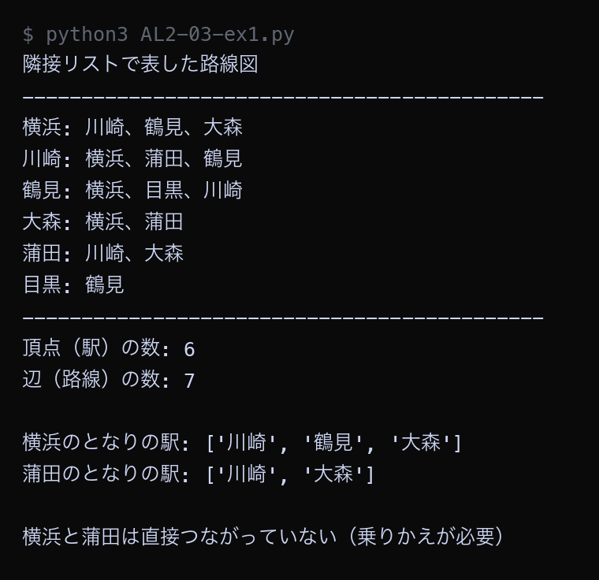

例題
例題1から例題4までのコードを実行してください。まず作業フォルダを用意します。
VS Code でフォルダとファイルを用意する
Step 1: 作業フォルダを作る
- デスクトップに AL2 という名前のフォルダを作る（後期の授業ではずっと同じフォルダを使う）
- AL2 フォルダの中に No03 という名前のフォルダを作る
└── AL2/
├── No02/ ← 前回のファイル
└── No03/ ← 第3回はここに保存
Step 2: VS Code でフォルダを開く
- Visual Studio Code を起動する
- メニューから 「ファイル」→「フォルダーを開く」を選ぶ
- Step 1 で作った AL2/No03 フォルダを選んで開く
左側のエクスプローラーに No03 フォルダの中身が表示される（最初は空）。
Step 3: 例題ごとにファイルを作って実行する
- 左側エクスプローラーの No03 の横にある 新しいファイルアイコンをクリック
- ファイル名を入力して Enter（例題1なら
AL2-03-ex1.py） - 例題のコードブロック右上の コピーボタンをクリック
- VS Code の編集画面に 貼り付ける（Ctrl+V / Cmd+V）
- 保存する（Ctrl+S / Cmd+S）
- 右上の ▷（再生ボタン）をクリックして実行する
今回作るファイル: AL2-03-ex1.py, AL2-03-ex2.py, AL2-03-ex3.py, AL2-03-ex4.py
今回のキーワード
| 用語（読み方） | 説明 |
|---|---|
| グラフ graph | 「点」と「点どうしのつながり」だけでものごとを表す方法。棒グラフや折れ線グラフとは別のもの。 |
| 頂点 ちょうてん / vertex | グラフの「点」。駅・人・迷路の1マスなどが頂点になる。ノード（node）とも呼ぶ。 |
| 辺 へん / edge | グラフの「つながり」。路線・友達関係・となり合うマスの関係などが辺になる。 |
| 隣接リスト りんせつリスト / adjacency list | 頂点ごとに、となりの頂点を並べた表し方。辺の数だけ場所を使うので、辺が少ないグラフに向く。 |
| 隣接行列 りんせつぎょうれつ / adjacency matrix | たてよこの表を作り、つながっていれば1を書く表し方。「2点がつながっているか」を1回で調べられる。 |
隣接リストで路線図を表す
6つの駅と7本の路線からなる路線図を、隣接リストの形でPythonに書き写します。 隣接リストは辞書を使い、「駅の名前」を鍵、「となりの駅を並べたリスト」を値にします。
Python ── AL2-03-ex1.py # グラフを「隣接リスト」で表す # 隣接リスト = それぞれの頂点について「となりにある頂点」を並べた表 # 6つの駅と、駅どうしをつなぐ路線をグラフにする # 頂点（ちょうてん） = 駅、辺（へん） = 路線 railway = { "新宿": ["渋谷", "池袋", "東京"], "渋谷": ["新宿", "品川"], "池袋": ["新宿", "上野"], "東京": ["新宿", "品川", "上野"], "品川": ["渋谷", "東京"], "上野": ["池袋", "東京"], } print("隣接リストで表した路線図") print("-" * 44) for station in railway: neighbors = railway[station] print(f"{station}: " + "、".join(neighbors)) print("-" * 44) # 頂点の数と辺の数を数える vertex_count = len(railway) edge_count = 0 for station in railway: edge_count = edge_count + len(railway[station]) edge_count = edge_count // 2 # 1本の路線が両方の駅から数えられるので半分にする print("頂点（駅）の数:", vertex_count) print("辺（路線）の数:", edge_count) print() # となりの駅をすぐに取り出せることが、隣接リストの長所 print("新宿のとなりの駅:", railway["新宿"]) print("品川のとなりの駅:", railway["品川"]) print() # 「新宿と品川は直接つながっているか」を調べる if "品川" in railway["新宿"]: print("新宿と品川は直接つながっている") else: print("新宿と品川は直接つながっていない（乗りかえが必要）")
▶ 実行結果

6つの駅それぞれについて、となりの駅が一覧で表示されました。railway["新宿"] と書くだけで、新宿のとなりの駅3つがすぐ取り出せています。辺（路線）の数を数えるときに // 2 で半分にしているのは、1本の路線が「新宿の側」と「渋谷の側」の両方から数えられてしまうためです。
隣接行列で同じ路線図を表す
例題1とまったく同じ路線図を、今度は隣接行列の形で書き写します。 6つの駅があるので、たて6マス・よこ6マスの表を作ります。
Python ── AL2-03-ex2.py # 同じグラフを「隣接行列」で表して、隣接リストと比べる # 隣接行列 = 表（マス目）を作り、つながっていれば1、つながっていなければ0を書く stations = ["新宿", "渋谷", "池袋", "東京", "品川", "上野"] # 路線（辺）の一覧 lines = [ ("新宿", "渋谷"), ("新宿", "池袋"), ("新宿", "東京"), ("渋谷", "品川"), ("東京", "品川"), ("東京", "上野"), ("池袋", "上野"), ] n = len(stations) # 全部のマスを0にした表を作る matrix = [[0 for j in range(n)] for i in range(n)] # 路線があるマスだけ1にする（行き帰りの両方を1にする） for a, b in lines: # index() は「リストの中で何番目にあるか」を返す。stations.index("渋谷") なら 1 i = stations.index(a) j = stations.index(b) matrix[i][j] = 1 matrix[j][i] = 1 # 表の見出しには、駅の名前ではなく番号を使う（そのほうが桁がそろって読みやすい） print("駅の番号") for i in range(n): print(f" {i} = {stations[i]}") print() print("隣接行列（1 = つながっている、0 = つながっていない）") print("-" * 40) print(" " + "".join(f"{j:>4}" for j in range(n))) for i in range(n): row = "".join(f"{matrix[i][j]:>4}" for j in range(n)) print(f" {i} {stations[i]} " + row) print("-" * 40) print() # 隣接行列は「つながっているか」を1回で調べられる a = "新宿" b = "品川" i = stations.index(a) j = stations.index(b) print(f"{a} と {b} はつながっているか → matrix[{i}][{j}] =", matrix[i][j]) a = "新宿" b = "東京" i = stations.index(a) j = stations.index(b) print(f"{a} と {b} はつながっているか → matrix[{i}][{j}] =", matrix[i][j]) print() # 使うマスの数を比べる matrix_cells = n * n list_cells = len(lines) * 2 print("隣接行列が使うマスの数:", matrix_cells, "マス（駅の数の2乗）") print("隣接リストが使うマスの数:", list_cells, "マス（路線の数の2倍）") print() print("駅の数を増やしたときの比較（1駅あたり3路線とした場合）") print("-" * 48) print(" 駅の数 隣接行列のマス数 隣接リストのマス数") for count in [6, 50, 500, 5000]: print(f"{count:>10} {count*count:>16} {count*3*2:>18}") print("-" * 48)
▶ 実行結果
![AL2-03-ex2.py の実行結果。駅の番号 / 0 = 新宿 / 1 = 渋谷 / 2 = 池袋 / 3 = 東京 / 4 = 品川 / 5 = 上野 / / 隣接行列（1 = つながっている、0 = つながっていない） / ---------------------------------------- / 0 1 2 3 4 5 / 0 新宿 0 1 1 1 0 0 / 1 渋谷 1 0 0 0 1 0 / 2 池袋 1 0 0 0 0 1 / 3 東京 1 0 0 0 1 1 / 4 品川 0 1 0 1 0 0 / 5 上野 0 0 1 1 0 0 / ---------------------------------------- / / 新宿 と 品川 はつながっているか → matrix[0][4] = 0 / 新宿 と 東京 はつながっているか → matrix[0][3] = 1 / / 隣接行列が使うマスの数: 36 マス（駅の数の2乗） / 隣接リストが使うマスの数: 14 マス（路線の数の2倍） / / 駅の数を増やしたときの比較（1駅あたり3路線とした場合） / ------------------------------------------------ / 駅の数 隣接行列のマス数 隣接リストのマス数 / 6 36 36 / 50 2500 300 / 500 250000 3000 / 5000 25000000 30000 / ------------------------------------------------](images/a03_ex2_result.png)
同じ路線図が、6×6＝36マスの表になりました。表のななめの線（自分自身との交点）はすべて0で、表は左上から右下の線を軸にして対称になっています。「新宿と東京はつながっているか」は matrix[0][3] を見るだけで分かります。一方で、駅の数が5000個になると、隣接行列は2500万マス、隣接リストは3万マスで、約800倍の差が出ています。
グラフの上を幅優先探索する
迷路で使った幅優先探索を、そのままグラフに使います。 「新宿から各駅まで、何本の路線に乗ればたどり着けるか」を求めます。
Python ── AL2-03-ex3.py # グラフの上を幅優先探索する # 迷路と同じ考え方で、「新宿から各駅まで何本の路線に乗ればよいか」を求める from collections import deque railway = { "新宿": ["渋谷", "池袋", "東京"], "渋谷": ["新宿", "品川"], "池袋": ["新宿", "上野"], "東京": ["新宿", "品川", "上野"], "品川": ["渋谷", "東京"], "上野": ["池袋", "東京"], } start = "新宿" # rides = 「その駅まで何本の路線に乗ればよいか」を記録する辞書 rides = {start: 0} came_from = {start: None} queue = deque([start]) print("幅優先探索の進み方") print("-" * 44) while len(queue) > 0: current = queue.popleft() print(f"{current} を調べる（乗る路線の数: {rides[current]}本）") for next_station in railway[current]: if next_station in rides: continue # すでに調べた駅 rides[next_station] = rides[current] + 1 came_from[next_station] = current queue.append(next_station) print(f" → {next_station} は {rides[next_station]}本でたどり着ける") print("-" * 44) print() print(f"{start} から各駅までに乗る路線の数") print("-" * 44) for station in railway: print(f" {station}: {rides[station]}本") print("-" * 44) print() # 経路を復元して表示する for goal in ["品川", "上野"]: route = [] node = goal while node is not None: route.append(node) node = came_from[node] route.reverse() print(f"{start} から {goal} への行き方:", " → ".join(route))
▶ 実行結果
![AL2-03-ex3.py の実行結果。幅優先探索の進み方 / -------------------------------------------- / 新宿 を調べる（乗る路線の数: 0本） / → 渋谷 は 1本でたどり着ける / → 池袋 は 1本でたどり着ける / → 東京 は 1本でたどり着ける / 渋谷 を調べる（乗る路線の数: 1本） / → 品川 は 2本でたどり着ける / 池袋 を調べる（乗る路線の数: 1本） / → 上野 は 2本でたどり着ける / 東京 を調べる（乗る路線の数: 1本） / 品川 を調べる（乗る路線の数: 2本） / 上野 を調べる（乗る路線の数: 2本） / -------------------------------------------- / / 新宿 から各駅までに乗る路線の数 / -------------------------------------------- / 新宿: 0本 / 渋谷: 1本 / 池袋: 1本 / 東京: 1本 / 品川: 2本 / 上野: 2本 / -------------------------------------------- / / 新宿 から 品川 への行き方: 新宿 → 渋谷 → 品川 / 新宿 から 上野 への行き方: 新宿 → 池袋 → 上野](images/a03_ex3_result.png)
新宿から見て、渋谷・池袋・東京は1本、品川・上野は2本という結果になりました。実行結果の上半分を見ると、幅優先探索が「新宿 → 渋谷・池袋・東京 → 品川・上野」の順に調べていることが分かります。1本で行ける駅をすべて調べ終えてから、2本で行ける駅に進んでいます。迷路のときとまったく同じ進み方です。
迷路をグラフに書き直して解く
迷路をグラフ（隣接リスト）に書き直してから、例題3と同じ幅優先探索で解きます。
迷路の1マスを1つの頂点とし、頂点の名前を "(行,列)" という文字列にします。
Python ── AL2-03-ex4.py # 迷路もグラフである # 迷路の1マスを頂点、となり合うマスどうしのつながりを辺と考えると、 # 迷路は「頂点がたくさんあるグラフ」になる。 # 迷路をグラフ（隣接リスト）に変換してから、例題3と同じ幅優先探索で解く。 from collections import deque maze = [ "S.#..", "..#..", "....#", "#.#..", "...#G", ] rows = len(maze) cols = len(maze[0]) print("迷路（S=スタート G=ゴール #=壁 .=通路）") for line in maze: print(" " + line) print() # --- 手順1: 迷路を隣接リストに変換する --- graph = {} for r in range(rows): for c in range(cols): if maze[r][c] == "#": continue # 壁は頂点にしない name = f"({r},{c})" # 頂点の名前は「(行,列)」にする graph[name] = [] for dr, dc in [(-1, 0), (1, 0), (0, -1), (0, 1)]: nr = r + dr nc = c + dc if nr < 0 or nr >= rows or nc < 0 or nc >= cols: continue if maze[nr][nc] == "#": continue graph[name].append(f"({nr},{nc})") print("迷路を隣接リストに変換した結果（最初の6個だけ表示）") print("-" * 44) count = 0 for name in graph: print(f" {name}: " + "、".join(graph[name])) count = count + 1 if count == 6: break print(" ...") print("-" * 44) print("頂点（通れるマス）の数:", len(graph)) print() # --- 手順2: 例題3とまったく同じ幅優先探索で解く --- start = "(0,0)" goal = f"({rows-1},{cols-1})" steps = {start: 0} came_from = {start: None} queue = deque([start]) while len(queue) > 0: current = queue.popleft() if current == goal: break for next_node in graph[current]: if next_node in steps: continue steps[next_node] = steps[current] + 1 came_from[next_node] = current queue.append(next_node) route = [] node = goal while node is not None: route.append(node) node = came_from[node] route.reverse() print("スタートからゴールまでの歩数:", steps[goal], "歩") print("通る順番:") print(" " + " → ".join(route)) print() picture = [list(line) for line in maze] for name in route: r, c = name.strip("()").split(",") r = int(r) c = int(c) if picture[r][c] == ".": picture[r][c] = "*" print("最短経路（* が通り道）") for line in picture: print(" " + "".join(line))
▶ 実行結果
![AL2-03-ex4.py の実行結果。迷路（S=スタート G=ゴール #=壁 .=通路） / S.#.. / ..#.. / ....# / #.#.. / ...#G / / 迷路を隣接リストに変換した結果（最初の6個だけ表示） / -------------------------------------------- / (0,0): (1,0)、(0,1) / (0,1): (1,1)、(0,0) / (0,3): (1,3)、(0,4) / (0,4): (1,4)、(0,3) / (1,0): (0,0)、(2,0)、(1,1) / (1,1): (0,1)、(2,1)、(1,0) / ... / -------------------------------------------- / 頂点（通れるマス）の数: 19 / / スタートからゴールまでの歩数: 8 歩 / 通る順番: / (0,0) → (1,0) → (2,0) → (2,1) → (2,2) → (2,3) → (3,3) → (3,4) → (4,4) / / 最短経路（* が通り道） / S.#.. / *.#.. / ****# / #.#** / ...#G](images/a03_ex4_result.png)
5マス×5マスの迷路のうち、壁ではないマスは19個ありました。19個の頂点と、となり合うマスどうしの辺からなるグラフに書き直せています。書き直したあとは、例題3の路線図とまったく同じコードで最短経路（8歩）が求まりました。見た目がまったく違う迷路と路線図が、グラフという同じ形に書き直すことで、同じプログラムで解けるようになります。